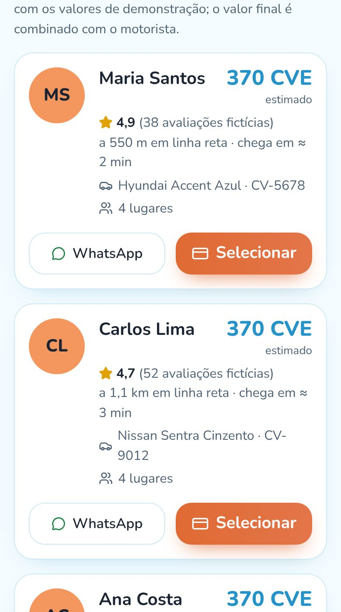
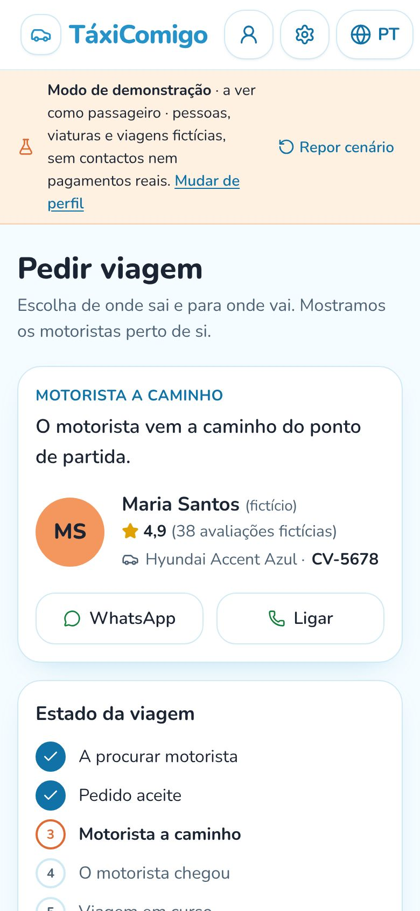
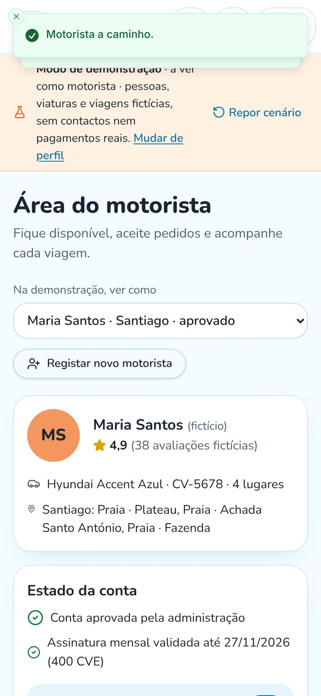
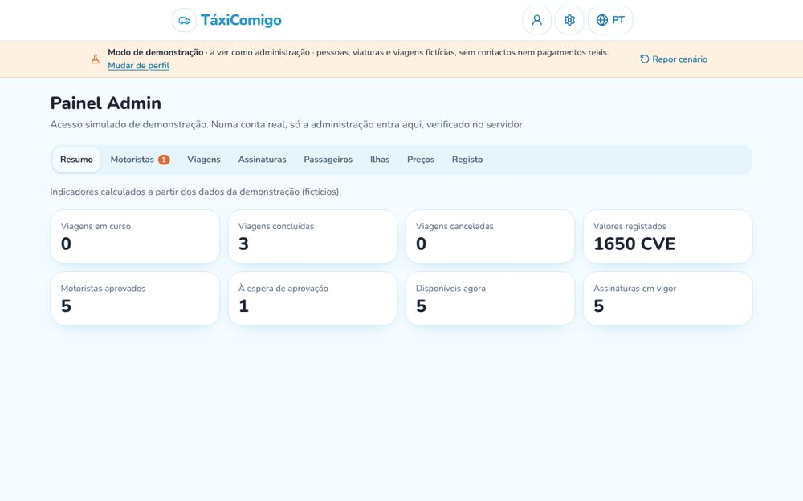
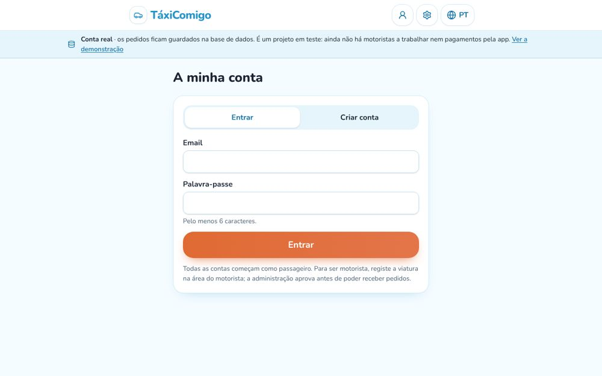

Porque nasceu
Apanhar um táxi não devia depender de conhecer o número certo
Em muitas localidades de Cabo Verde, o transporte combina-se por telefone, com o motorista que alguém conhece. Para quem chega de fora, ou para quem precisa à noite, nem sempre é fácil saber quem está disponível, quanto vai custar e se a viagem é segura.
As apps conhecidas lá fora não estão pensadas para cá: as ilhas, as localidades, os escudos e o WhatsApp, que é como as pessoas falam.
Em setembro de 2025 desenhei o TáxiComigo: a praia, o azul-turquesa, os botões coral e os cartões dos motoristas. Quando perdi o acesso à conta, ficaram as capturas e as conversas de planeamento. Em 2026 reconstruí-o a partir delas, sem fingir que recuperei o código original.
O que faz
As funções de uma app de transporte, pensadas para as ilhas
Há uma demonstração com pessoas fictícias e, ao lado, contas reais ligadas à base de dados.
Para o passageiro
Origem e destino com referência
Escolhe a ilha e a localidade, junta um ponto de referência («junto à farmácia») ou usa a localização do telemóvel.
Escolher o motorista ou Chamada Rápida
Vê os motoristas perto, com viatura, matrícula, avaliação e preço estimado em CVE. Ou faz um pedido para todos.
Acompanhar a viagem
Do pedido à chegada, em tempo real: aceite, a caminho, chegou, em curso, concluída. No fim, avalia.
«O motorista chegou. Confirme a matrícula antes de entrar.»
Para o motorista
Registo e aprovação
Regista a viatura e fica à espera de aprovação. Só recebe pedidos depois de aprovado e com a assinatura validada.
Pedidos em tempo real
Os pedidos da sua ilha aparecem sem recarregar a página. Aceita ou recusa e avança cada etapa.
Contacto só se quiser
O passageiro só vê o telefone do motorista numa viagem aceite, e só se o motorista o autorizar.
Para a administração
Aprovar e acompanhar
Aprova ou suspende motoristas, vê todas as viagens e cancela quando é preciso.
Preços e localidades
Muda o valor base, o preço por km e o mínimo, e liga ou desliga localidades.
Registo de tudo
Cada decisão fica registada com data e com quem a tomou.
Ecrãs
Como se vê





Maria Santos, Carlos Lima e Ana Costa são motoristas fictícios da demonstração, com os nomes das capturas de 2025.
Por dentro
De um pedido a uma viagem concluída
O que acontece com contas reais.
- Passageiro
Pedir
Escolhe origem e destino na mesma ilha e pede a um motorista ou a todos. A estimativa é calculada no servidor.
- Motorista
Receber e aceitar
O pedido aparece logo. Se dois motoristas aceitarem ao mesmo tempo, só um consegue: a base de dados garante-o.
- Os dois
Seguir as etapas
A caminho, chegou, em curso, concluída. Cada passo só pode ser dado por quem deve, e fica registado.
- Motorista
Registar o valor
O pagamento é combinado e feito diretamente. O motorista regista o valor recebido.
- Passageiro
Avaliar
Dá de 1 a 5 estrelas. A média aparece aos próximos passageiros.
Como foi feita
As ferramentas, explicadas sem jargão
Cada linha diz o que a ferramenta é e para que serve nesta app.
Construir e publicar
Onde o projeto vive e é publicado, em taxicomigo.lovable.app.
Guarda o código e o histórico de cada alteração.
Ajudou a reconstruir a app a partir das capturas, a escrever as regras e os testes.
A app por dentro
Contas com email, regras de segurança por pessoa e avisos em tempo real quando uma viagem muda.
Mostra a partida e o destino. A linha entre os dois é reta e o ecrã diz que é ilustrativa.
Os ecrãs, as cores das capturas de 2025 e a adaptação ao telemóvel.
Decisões
O que decidi e porquê
Escolhas feitas para o TáxiComigo ser honesto e seguro.
Perdi a conta onde o projeto foi feito em 2025.
Reconstruí a partir das capturas e contei isso na própria app, numa página sobre a história do projeto. Não finjo que recuperei o código original.
Num serviço de transporte, dois motoristas podem aceitar o mesmo pedido ao mesmo tempo.
A aceitação é feita numa única operação na base de dados: só um consegue, o outro recebe uma mensagem clara.
Sem serviço de rotas, não sei a distância real pela estrada.
A estimativa usa a linha reta com um fator de estrada, e o ecrã diz sempre que é uma estimativa.
Mostrar o telefone de toda a gente seria perigoso.
O número só aparece numa viagem aceite, e o do motorista só se ele autorizar.
Não quis fingir pessoas, contactos ou tarifas.
Os motoristas da demonstração estão marcados como fictícios, os botões de WhatsApp não ligam a números inventados e os preços estão identificados como valores de teste.
Em números
O TáxiComigo em números
Com franqueza
Limites atuais
- Não é um serviço em funcionamento: ainda não há motoristas a trabalhar nem pagamentos pela app.
- As distâncias são em linha reta e os tempos são estimativas.
- Os preços são valores de teste, não tarifas oficiais.
A seguir
Próximos passos
- Testar com motoristas reais numa localidade.
- Rotas pela estrada e a posição do motorista durante a viagem.
- Avisos no telemóvel, Kriolu e inglês.
O meu papel
Lenira Leitão
A ideia, o desenho de 2025 e as decisões são meus. Conheço como o transporte se combina nas ilhas e quis uma app que fale a mesma língua: localidades, escudos e WhatsApp.
A reconstrução foi feita com ferramentas de IA, a partir das minhas capturas, dos meus pedidos e das minhas escolhas, com as regras de segurança testadas na base de dados.